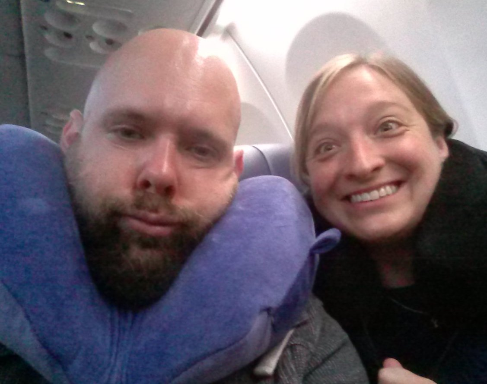
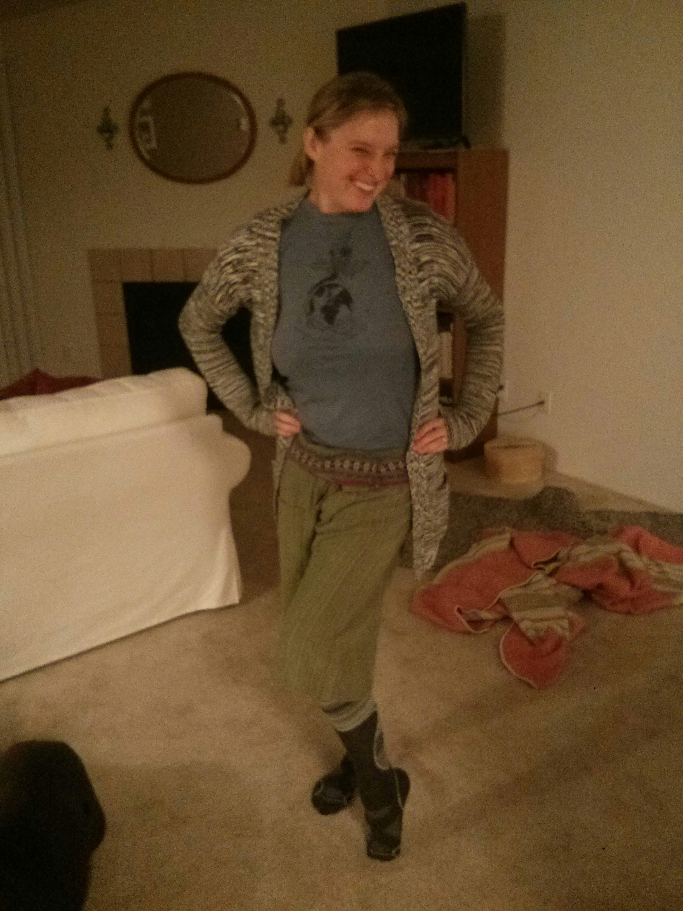
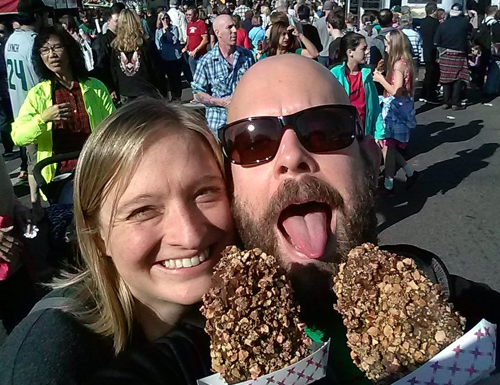
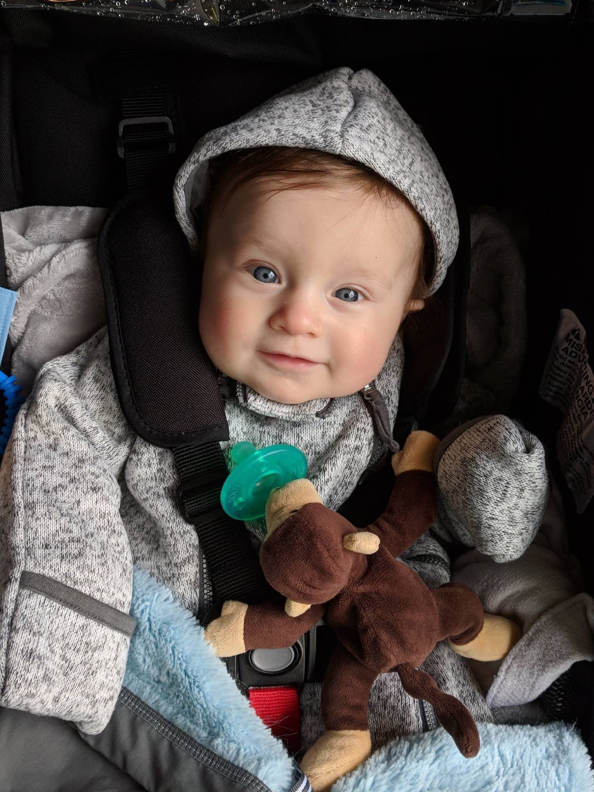
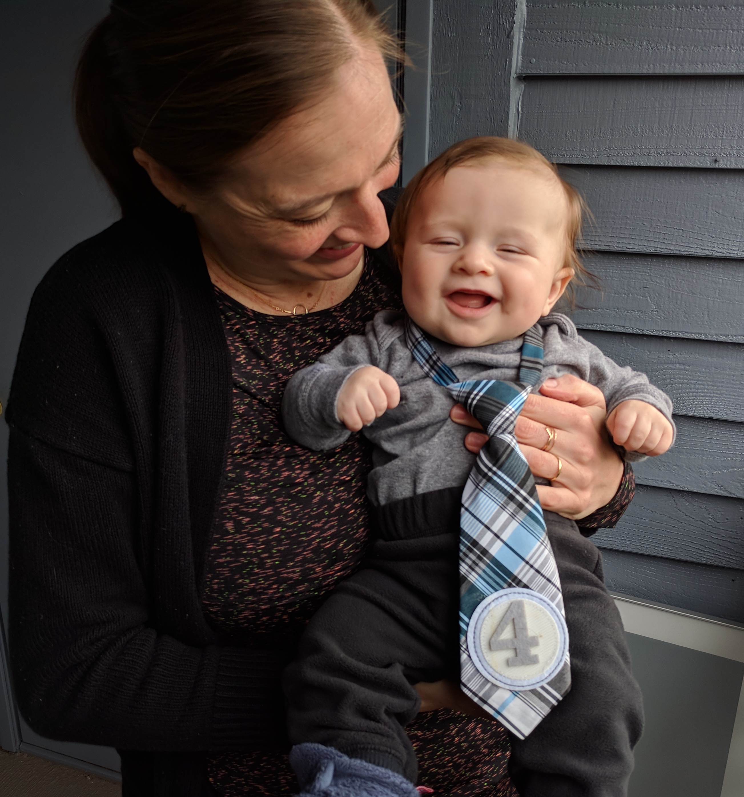
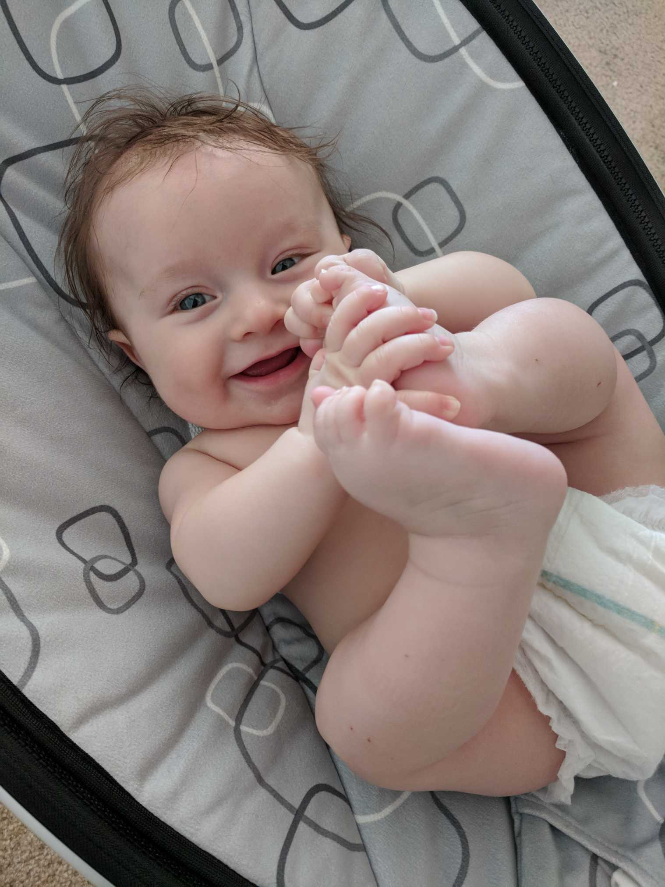
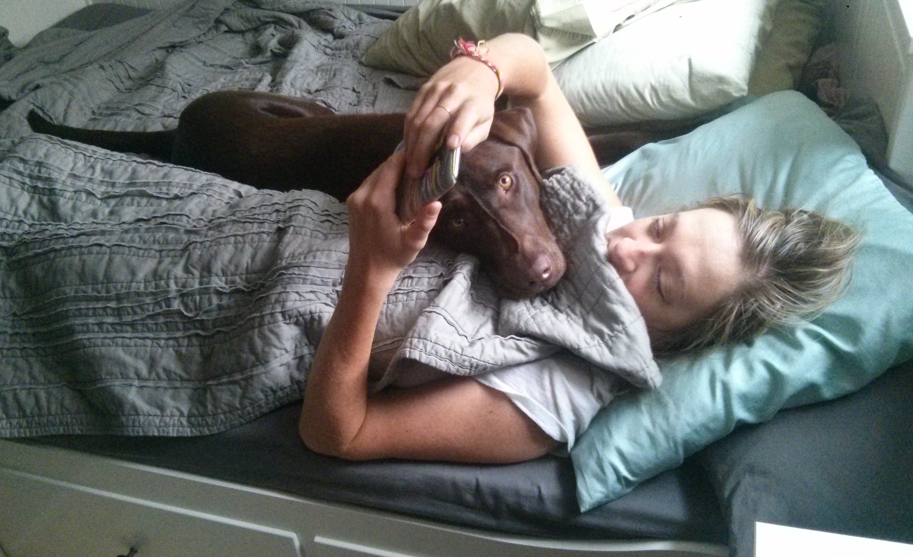

This is my family; my wife, Rachelle, our son, Arden, and our dog, Calvin.
This is Rachelle. She's beautiful, weird, funny, intellegent, strong, and is hands down the best human I've every met. She's a Naturopathic physician, and an Acupuncturist; she is a wonderful healer in the truest sense of the word.
  We met back in 2002, and, I would argue, fell in love with one another pretty much at first sight.
It would take years, and a number of different boyfriends and girlfriends for us to finally get together - long story. But when we did, it was magical.
I'll tell you about sometime over drinks if you ask me.
This is our little man, Arden. I know I'm his father and so I'm biased or whatever. But I think it's pretty clear that he's just objectively the cutes kid on the planet. Proof below.
  Arden is bright, happy, strong, curious, explorative, and generally a pretty happy little guy. He loves helping me shovel snow off the sidewalk, walking up and down stairs, and peekaboo.
I love watching him grow, and can't express the excitement I have when I think about who he will continue to become.
This is Calvin, or Cal-bone as we call him. He is a 4 1/2 year old chocolate lab, and he is a very good boy.
If all dogs go to heaven, he'll go to extra heaven; or maybe heaven2 since he's such a good dog. He likes chewing on things, snuggling, running around in the mountains off leash, and barking at squirrels.